Collection
La Chronique des pèlerins
Douze pages éparses racontent comment le monde est devenu ce que les pèlerins ont trouvé : les Anciens, les Colosses, l'étoile tombée, chaque merveille. Chaque page a son illustration et sa rareté :
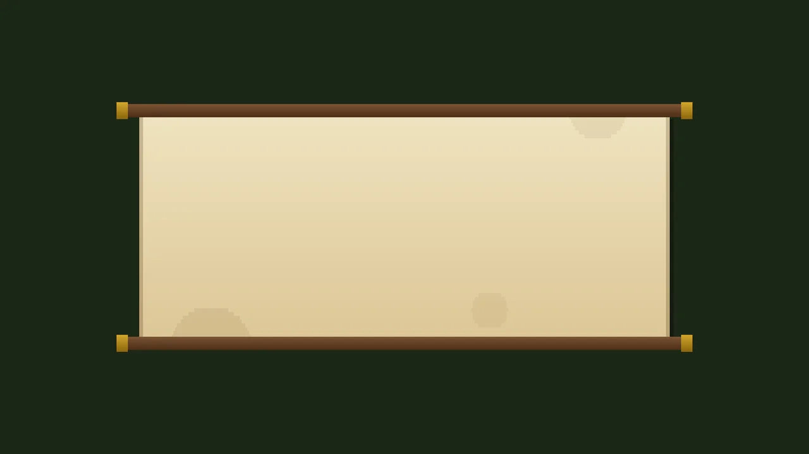
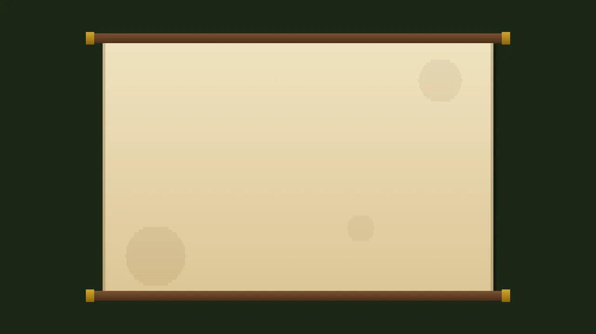
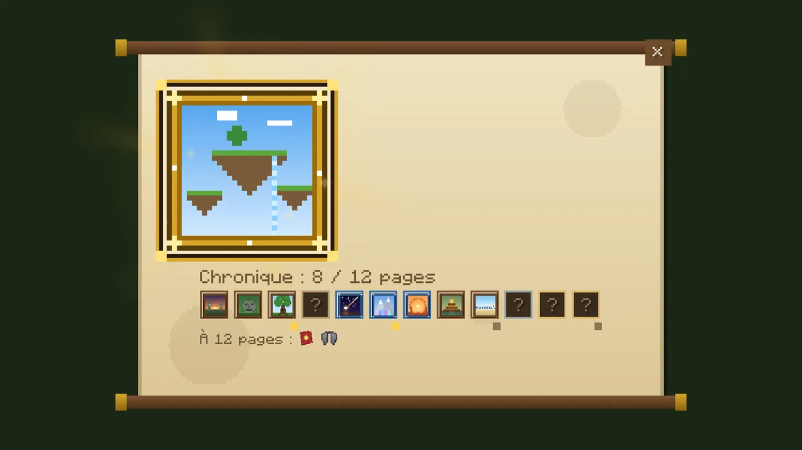
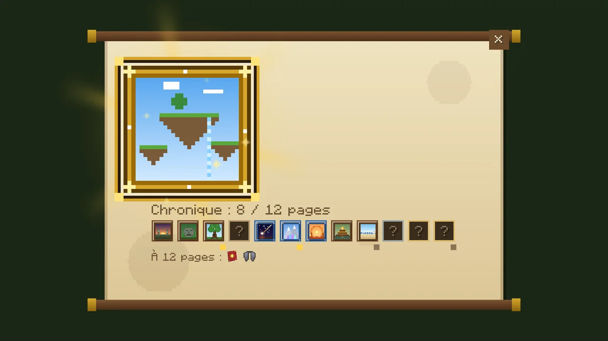
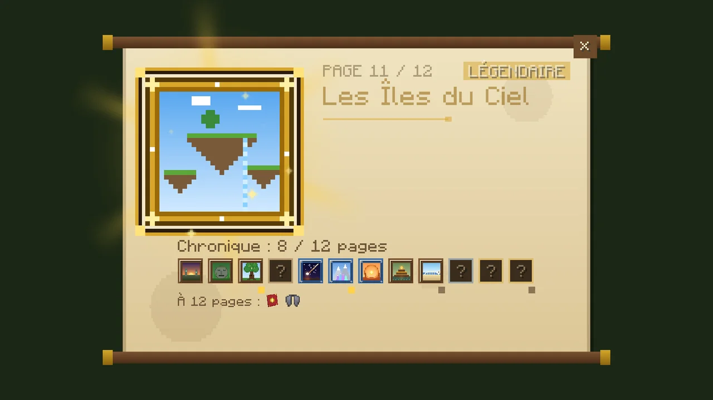
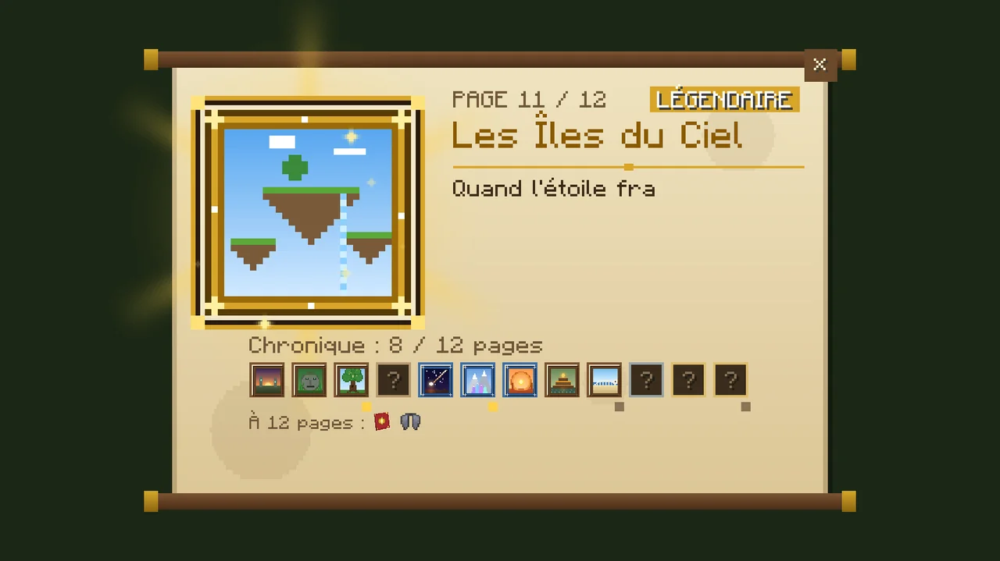
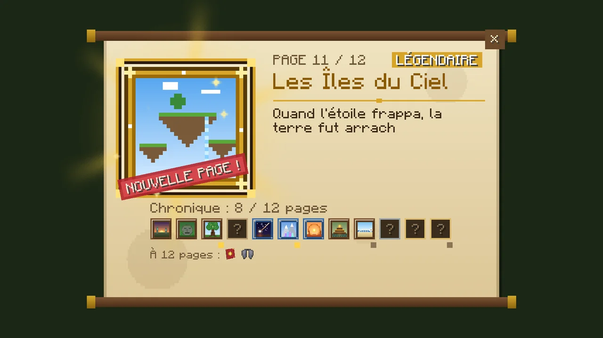
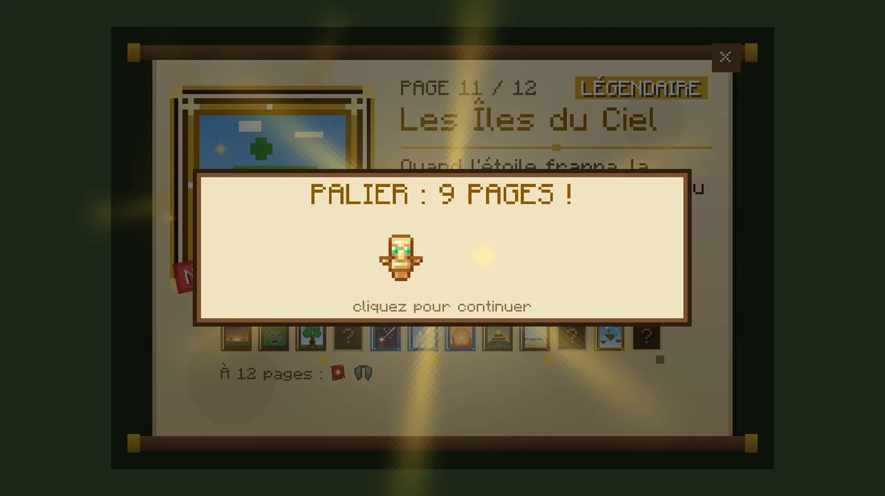
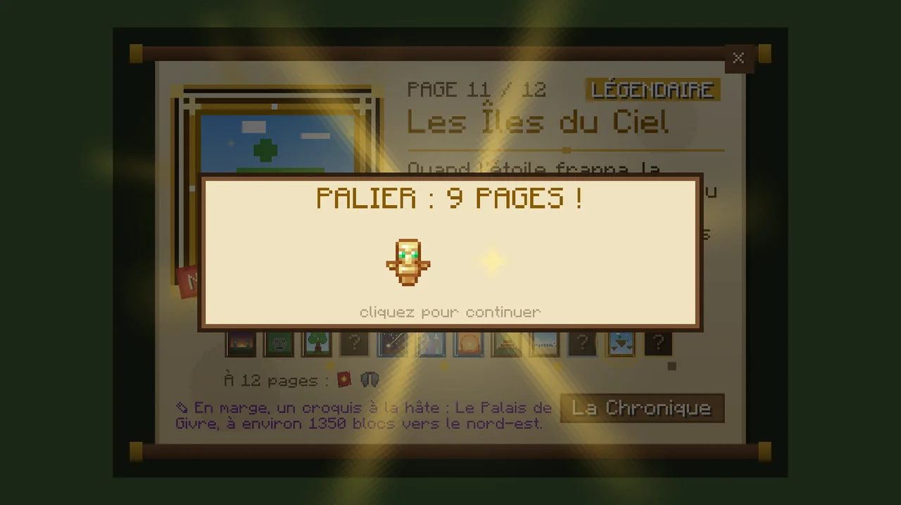
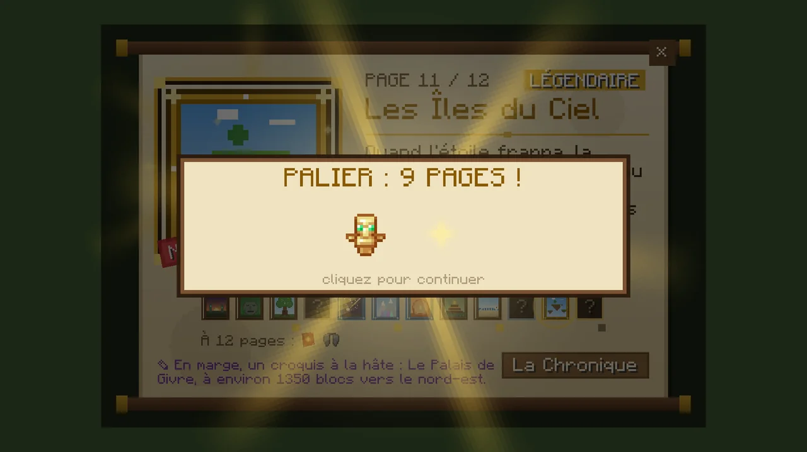
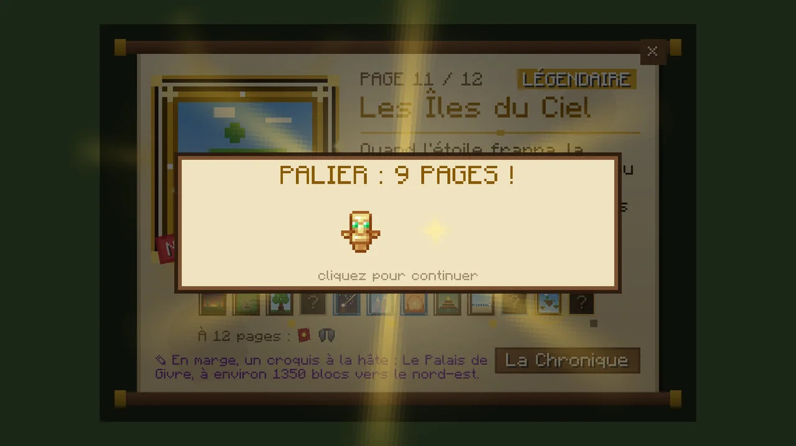
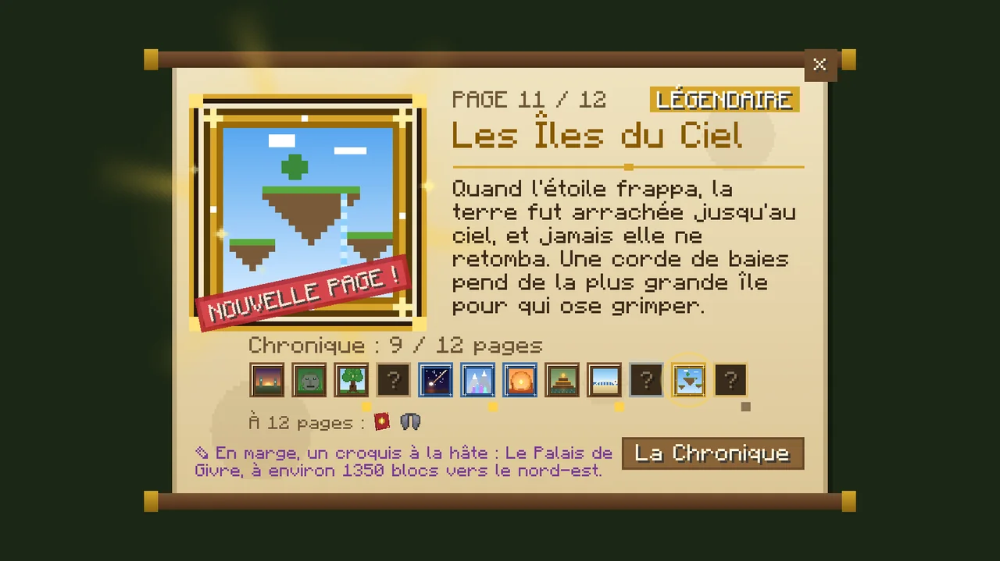
Survolez une page pour la retourner.
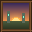
1Le Premier MatinLe Premier Matin
Avant les pèlerins, avant les villages, les Anciens gravaient leurs glyphes dans la pierre et donnaient sept noms à la terre. Leurs lampes brûlent encore là où leurs salles sont tombées.
Commune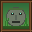
2Les AnciensLes Anciens
Ils taillaient leurs propres visages dans les montagnes. Du plus grand, il ne reste qu'une tête, enfoncée dans la jungle, les yeux encore allumés, la bouche ouverte comme une porte.
Commune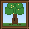
3L'Arbre-MondeL'Arbre-Monde
Le premier arbre poussa où serait la première forêt. Ses racines tiennent le bois ensemble ; un escalier monte en lui jusqu'à une salle où les Anciens gardaient leurs graines.
Commune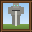
4Les ColossesLes Colosses
Les Anciens éveillèrent des géants de pierre pour garder leurs tertres. La plupart dorment sous les plaines. L'un d'eux est encore debout, les mains sur son épée, et il y a une salle dans sa poitrine.
Commune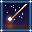
5La Chute de l'ÉtoileLa Chute de l'Étoile
Une étoile tomba au temps des Anciens et creusa la terre comme un bol. Son cœur était froid, et plein de ce qui n'appartient pas à ce monde.
Rare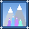
6Les Cimes de PrismeLes Cimes de Prisme
La poussière de l'étoile retomba sur les montagnes et devint cristal. Dans l'une d'elles s'ouvrit une géode vaste comme une cathédrale ; des golems furent chargés de la garder.
Rare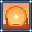
7L'Arche du SoleilL'Arche du Soleil
Les prêtres du soleil des canyons dressèrent un anneau de pierre pour retenir le soleil le jour le plus long. Ils y suspendirent le leur, et cachèrent leur or dessous.
Rare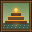
8Le Marais d'AmbreLe Marais d'Ambre
Le marais avala pierre après pierre le temple des gardiens de l'ambre. L'ambre garde tout ce qui y tombe ; l'eau aussi, et ce qui y vit.
CommuneLe Léviathan
Quand la mer se retira, le grand serpent resta sur le rivage. Ses os y sont encore, et la marée cache ses trésors dans son crâne.
CommuneLe Palais de Givre
Une reine de l'hiver bâtit sa salle d'une glace qui ne fond jamais. Elle n'est plus ; ce qui gardait son trône, si.
Rare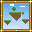
11Les Îles du CielLes Îles du Ciel
Quand l'étoile frappa, la terre fut arrachée jusqu'au ciel, et jamais elle ne retomba. Une corde de baies pend de la plus grande île pour qui ose grimper.
Légendaire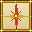
12Les PèlerinsLes Pèlerins
Nous sommes venus après, de merveille en merveille, une boussole à la main, et nous nous sommes établis là où les Anciens avaient vécu. Qui lit toutes ces pages marche dans nos pas.
Légendaire
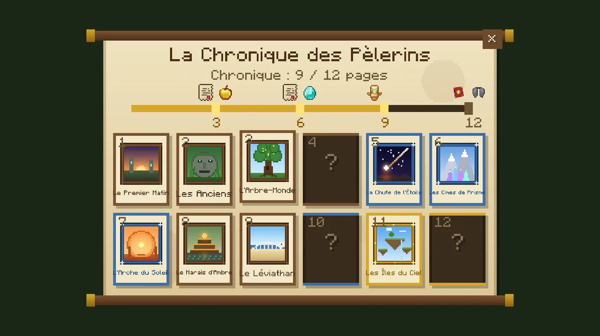

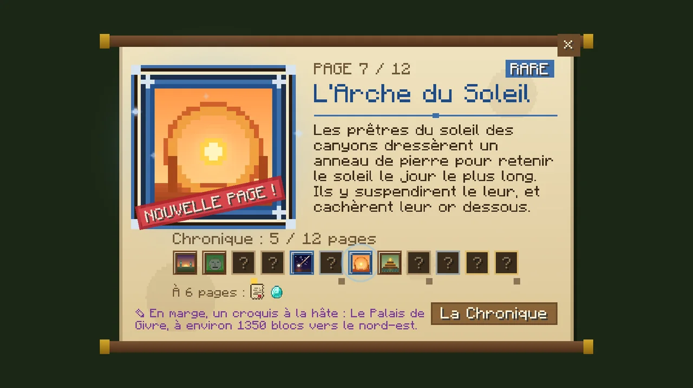
| Rareté | Pages | Chance relative |
|---|---|---|
| Commune (cadre de bois) | 1 Premier Matin, 2 Anciens, 3 Arbre-Monde, 4 Colosses, 8 Marais d'Ambre, 9 Léviathan | ×10 |
| Rare (bleu et argent) | 5 Chute de l'Étoile, 6 Cimes de Prisme, 7 Arche du Soleil, 10 Palais de Givre | ×4 |
| Légendaire (or, brillante) | 11 Îles du Ciel, 12 Les Pèlerins | ×1 |
On les trouve dans les coffres des sites (un sur trois environ), des merveilles et des épreuves (une à chaque fois, plus souvent rare), des caches et des tombes, et chez l'Ancien. Clic droit pour lire : le parchemin se déroule à l'écran, l'illustration s'élève dans la lumière de sa rareté (rayons d'or pour une légendaire), le texte s'écrit, le tampon « NOUVELLE PAGE » tombe et la page vole à sa place parmi les douze. Elle passe dans votre journal (3 fragments) et le parchemin s'efface ; un doublon s'effrite en encre (2 fragments). Dans chaque marge, un croquis indique la merveille inexplorée la plus proche, avec sa distance et sa direction.
| Palier | Récompense |
|---|---|
| 3 pages | Boussole des Merveilles, 2 pommes dorées |
| 6 pages | 24 fragments, 4 diamants |
| 9 pages | Totem d'immortalité, pomme dorée enchantée |
| 12 pages | La Chronique reliée (le livre, qui rouvre la collection partout) et des élytres |
Le livre de la Chronique montre les douze pages en cartes : les lues en couleur, les manquantes dans l'ombre, leur cadre seul trahissant leur rareté ; la barre des paliers et leurs récompenses au-dessus. Cliquez une page lue pour la relire. Ouvert par la Chronique reliée, par le bouton d'une page, ou par /contrees chronicle.